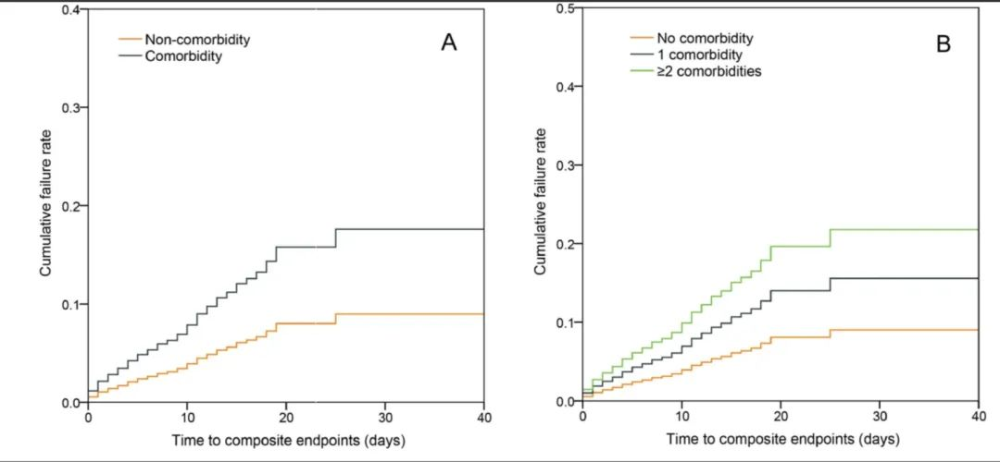
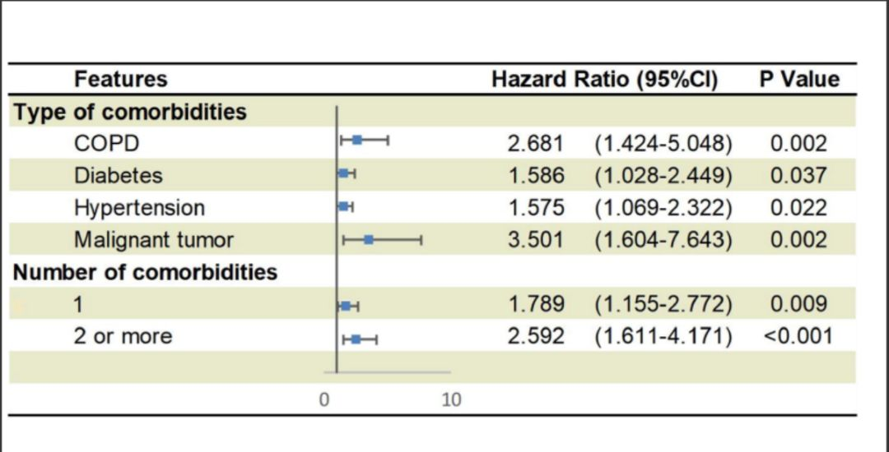

钟南山领衔在顶级医学期刊发文，回应超长潜伏期
原文链接 备份链接 澎湃新闻记者 贺梨萍 当地时间2月28日，由国家卫健委高级别专家组组长、中国工程院院士钟南山领衔的“中国2019新型冠状病毒疾病的临床特征”研究论文在顶级医学期刊《新英格兰医学杂志》（NEJM）上在线公开发表。该研究纳 …
澎湃新闻记者 张若婷 贺梨萍
当地时间2月27日，一项由国家卫健委高级别专家组组长、中国工程院院士钟南山团队领衔的题为“Comorbidity and its impact on 1590 patients with COVID-19 in China: A Nationwide Analysis”的回顾性案例研究成果发表在医学预印本平台Medrxiv上，该研究针对全国31个省市575家医院共计1590例新冠肺炎患者，分析评估了新冠肺炎合并症的范围及其对于临床结果的影响。
这项研究也是国内首次系统评估合并症对新冠肺炎患者临床特征和预后影响的全国性调查。数据收集自2019年11月21日至2020年1月31日。
研究结论显示：目前，中国约有四分之一的新冠肺炎患者存在合并症，并容易导致临床结果较差。癌症与慢性阻塞性肺疾病（COPD）是代表最大不良预后风险的并发症，此外，和没有合并症的患者相比，只要患者有一种合并症，其不良预后风险率就会升高约79%，同时有两种以上合并症的话，风险率更是会升高1.59倍（HR 2.59）。
该研究的作者共有47名，作者单位包括国家呼吸系统疾病临床医学研究中心、广州医科大学附属第六医院、南方医科大学器官衰竭防治国家重点实验室、武汉金银潭医院、华中科技大学同济医学院附属协和医院、深圳第三人民医院、华南理工大学附属第二医院、中山大学附属第五医院、广州市第八人民医院、武汉中心医院、成都公共卫生临床医学中心、长沙市第一医院、海南省第三人民医院、浙江温岭市第一人民医院等。
研究通讯作者为钟南山，及广州医科大学附属第一医院胸外科主任、广州呼吸健康研究院院长何建行教授。研究团队代表整个中国新冠肺炎医疗专家组。
在医学中，合并症是指与原发性疾病同时发生（伴随发生的或并存的）一种或多种其他疾病。此前已有研究表明，对H7N9感染患者来说，有任何一项合并症，都可能导致患者发生急性呼吸窘迫综合征的风险增加3.4倍。
而与流感、严重急性呼吸综合征冠状病毒(SARS-CoV)和中东呼吸综合征冠状病毒(MERS-CoV)相似，新冠肺炎更容易使易感患者中发生呼吸衰竭和死亡，但以往的研究在研究设计上存在一定的局限性，包括样本量相对较小、单中心观察等。研究团队认为，有必要解决这些局限进行研究，以探索新冠肺炎不利影响背后的因素。
值得一提的是，这是钟南山领衔的整个中国新冠肺炎医疗专家组第二次发表重要研究。
此前的当地时间2月9日，由钟南山领衔的第一项研究同样在预印本网站medRxiv上率先公开（未经同行评议）。随后的当地时间2月28日，“中国2019新型冠状病毒疾病的临床特征”研究论文正式在顶级医学期刊《新英格兰医学杂志》（NEJM）上在线发表，这项研究纳入自2019年12月11日至2020年1月29日来自全国31个省(市)共552家医院的1099例确诊新冠肺炎患者。（相关报道：钟南山领衔在顶级医学期刊发文，回应超长潜伏期）
四分之一患者有合并症，高血压最常见
在纳入研究的1590名新冠肺炎患者中，研究团队共发现399人（25.1%）有合并症，130名患者存在两种或两种以上合并症。这也就是意味着，研究群体中有大约四分之一的人患有合并症。
患者的整体特点与此前的研究结果相近，比如男性偏多（57.3%），中位年龄接近50岁（48.9岁），症状以发热、咳嗽、乏力为主。患者最常见的症状是住院时或住院后发烧（88.0％），其次是干咳（70.2％），疲劳（42.8％）和排痰性咳嗽（36.0％）相对较少。超过70％的患者至少有一种异常的胸部CT表现（包括毛玻璃状混浊，肺部浸润和间质疾病）。严重病例占纳入研究人群的16.0％。
合并症主要包括高血压，心血管疾病，脑血管疾病，糖尿病，乙型肝炎感染，慢性阻塞性肺疾病（COPD），慢性肾病，癌症和免疫缺陷病等。总体来说，共有269人（16.9%）、59人（3.7%）、30人（1.9%）、130人（8.2%）、28人（1.8%）、24人（1.5%）、21人（1.3%）、18人（1.1%）和3人（0.2%）分别报告有高血压、心脑血管疾病、脑血管疾病、糖尿病、乙肝感染、COPD、慢性肾病、恶性肿瘤和免疫缺陷。
也就是说，最常见的是高血压，其次是糖尿病、心血管疾病，此外则是慢性阻塞性肺疾病。
研究发现，“至少有一种合并症”的情况在重症患者中比在非重症患者中更常见（在前者中占比32.8％，后者中为10.3％）。患有至少一种合并症的患者年龄较大（平均年龄60.8岁，没有合并症的为44.8岁），更容易出现呼吸急促、恶心呕吐等症状，并且倾向于存在异常的胸部X线表现（29.2％）。
研究团队进一步确认了130名（8.2%）报告有两种或两种以上合并症的患者。两种或两种以上合并症在重症患者中较非重症患者更常见（40.0%vs.29.4%）。两种或两种以上并发症患者和只有单一合并症患者相比，年龄更大（66.2vs.58.2），也更有可能有气短（55.4%vs.34.1%）、恶心或呕吐（11.8%vs.9.7%）、无意识（5.1%vs.1.3%），出现异常X射线胸片（20.8%vs.23.4%）。
从新冠肺炎重症患者和非重症患者相比来看，同时患有这些合并症的比例分别为：高血压（32.7%vs.12.6%），心血管疾病（33.9%vs.15.3%）、脑血管疾病（50.0%vs.15.3%）、糖尿病（34.6%vs.14.3%）、乙肝感染（32.1%vs.15.7%）、慢性阻塞性肺病（62.5%比15.3%）、慢性肾脏疾病（38.1%比15.7%）、恶性肿瘤（50.0%vs.15.6%）。
此外，研究发现，在湖北省内收治的病人更常见合并症，有武汉市接触史的也是如此。
“复合终点”患者中：
慢性阻塞性肺疾病合并症最多，癌症病人风险最高
研究人员在论文中定义了研究的“复合终点（composite endpoints）”，即患者进入重症监护病房（ICU），进行有创通气或死亡。在研究期间，有131名（8.2％）患者达到了复合终点。
研究发现，在131例达到上述“复合终点”的病例中，有77例（19.3%）“至少有一种合并症”。而在“有两种或两种以上合并症”的130名患者中，37例达到复合终点，占比高达28.5%。这也意味着，与没有合并症或者具有单一合并症的患者相比，具有两种以上合并症的患者到达复合终点的风险显著升高。

随时间变化患者到达“复合终点”的风险比较：A中橙色曲线代表患者无任何合并症，深蓝色曲线代表患者患有合并症；B中橙色曲线代表患者没有合并症，深蓝色曲线代表患有单一合并症，绿色曲线代表患者有两种及以上合并症
达到复合终点的病例中，最多见的合并症是慢性阻塞性肺疾病（COPD），这一疾病在达到复合终点的病例中占比50%，在重症病人中占比62.5%，在没有达到复合终点的病例中仅占比7.6%。
此外，达到复合终点的病例与未达到复合终点预后较好的病例相比，高血压（19.7%vs. 5.9%）、心血管疾病（22.0%vs. 7.7%）、脑血管疾病（33.3%vs. 7.8%）、糖尿病（23.8%vs. 6.8%）、慢性肾病（28.6%vs. 8.0% ）、癌症（38.9% vs. 7.9% ）也都更多见。
在调整了年龄和吸烟状况后，研究发现患有恶性肿瘤带来的“复合终点”风险比(Hazard Ratio, HR)最高，为3.50（95%置信区间为1.60-7.64），即患有恶性肿瘤疾病新冠患者达到复合终点的风险率是未患恶性肿瘤患者风险率的3.50倍。此外，COPD（HR 2.68, 95%CI为1.42-5.05），糖尿病（HR 1.59，95％CI 1.03-2.45），高血压（HR 1.58，95％CI 1.07-2.32）也是最显著的会带来更高风险的合并症。

合并症种类、数量与相应的HR
与没有合并症的患者相比，患至少一种合并症的患者的HR为1.79（95％CI为1.16-2.77），而患有两种或两种以上合并症的患者HR为2.59（95％CI为1.61-4.17）。这意味着，只要有一种合并症发生，就与患者的不良预后风险率升高79%有关，同时有两种以上的话，风险率会升高1.59倍。
彻底评估合并症，
有助于建立新冠肺炎患者风险分级
论文提到，总的来说，这项研究结果表明，与没有合并症的患者相比，有合并症的的患者会更严重。较多的合并症与疾病严重程度较重相关。
研究团队在讨论环节表示，实际上，现有的一些文献报告已记载了禽流感、SARS-CoV和MERS-CoV感染患者临床结局较差的风险不断上升。糖尿病、高血压、呼吸系统疾病、心脏病、妊娠、肾脏疾病和恶性肿瘤是最常见的预后不良的合并症。
研究团队表示，这项研究提示，与其他严重急性呼吸系统疾病的暴发类似，慢性阻塞性肺病、糖尿病、高血压和恶性肿瘤等合并症容易导致新冠肺炎患者的不良临床结局。
然而，不同合并症与预后之间的相关性强度不太一致。例如，心脏疾病与流感、SARS-CoV或MERS-CoV感染的不良临床结果之间的风险是不确定的。除糖尿病外，没有其他合并症被确定为MERS-CoV感染患者临床预后不良的预测因素。不过，至今也很少有研究探讨这些关联背后的机制。
合并症之间还有相当多的重叠。例如，糖尿病和慢性阻塞性肺病经常与高血压或冠心病并存。
而这项研究重要的是，团队已经证实，与没有或只有单一合并症的患者相比，有两种或两种以上合并症的患者预后不良的风险显著升高。
研究结果提示，在预测新冠肺炎患者的预后时，应同时考虑合并症的类型和数量。
研究团队写道，这项研究的公共卫生意义是，应该在门诊诊所或在入院时通过仔细询问病史来对患者进行适当的分诊，因为这将有助于确定哪些患者更有可能在新冠肺炎的进展过程中出现严重不良结果。
另外，研究团队建议，需要一个有专家的多学科小组及时管理合并症情况。新冠肺炎患者在确诊后也应立即隔离，这将有助于为这些易感人群提供更好的个人医疗保护。
研究团队认为，对合并症的彻底评估可能有助于建立新冠肺炎患者入院时的风险分级。
本期编辑 常琛
推荐阅读


原文链接 备份链接 澎湃新闻记者 贺梨萍 当地时间2月28日，由国家卫健委高级别专家组组长、中国工程院院士钟南山领衔的“中国2019新型冠状病毒疾病的临床特征”研究论文在顶级医学期刊《新英格兰医学杂志》（NEJM）上在线公开发表。该研究纳 …
原文链接 备份链接 _ 基层防控中筛查方式是否改变，需要传染病学专家与临床专家们在对这一论文进行评议之后，与政策制定者综合考量 _ 文 | 《财经》记者 赵天宇 孙爱民 编辑 | 王小 2020年2月9日，国家呼吸系统疾病临床医学研究中 …
原文链接 备份链接 图片来源：Press TV 记者：肖恩 “ 伊朗新冠肺炎确诊病例数已超过日本，在海外国家中仅次于韩国和意大利。 ” 伊朗卫生部3月1日通报称，24小时内，该国新增确诊病例385例，累计978例，其中死亡54例，治愈出 …
原文链接 备份链接 新增和现有病例基数连续回落几天后，武汉各大医院终于度过最艰难的时刻。眼下，如何降低重症患者死亡率成为各大重症定点收治医院的首要任务。药物、血浆、ECMO等治疗手段已经纷纷进入临床应用，但面对捉摸不定的新冠病毒，医生们 …
原文链接 备份链接 2月28日，《法医学杂志》发布了《新型冠状病毒肺炎死亡尸体系统解剖大体观察报告》。这是新冠肺炎爆发以来的首例完整的尸体解剖。该例尸检的参与者刘良曾经说过：“解剖的必要性之一，就是要弄明白这个病毒是通过什么机制让肺受到损 …